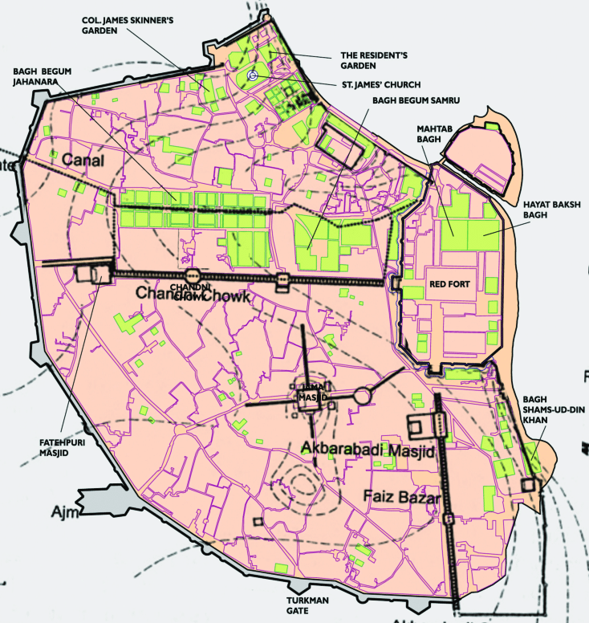

Uses of Surveying
Surveying is the scientific technique to determine the position of points and angles & distances between them. The process of surveying is used to fulfill various purposes. It is necessary for making map, planning a project etc. To accomplish all civil engineering works or projects successfully, surveying is used.
- Topographical maps showing hills, rivers, towns, villages, forests etc. are prepared by surveying.
- For planning and estimating new engineering projects like water supply and irrigation schemes, mines, railroads, bridges, transmission lines, buildings etc. surveying is required.
- Cadastral Map showing the boundaries a field houses and other properties are prepared by surveying.
- Engineering map showing the position of engineering works like roads, railways, buildings, dams, canals etc. are prepared through surveying.
- To set out a work and transfer details from map to ground knowledge of surveying is used.
- For planning navigation routes and harbors, marine and hydro-graphic surveying are used.
- To help military strategic planning, military maps are prepared by surveying.
- For exploring mineral wealth, mine survey is necessary
- To determining different strata in the earth crust, geological surveys are required.
- Archaeological surveys are used to unearth relics of antiquity.
